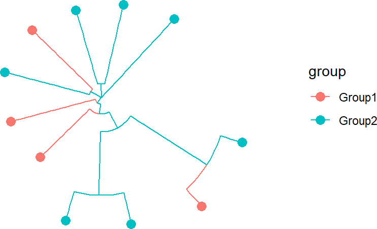

stana
Noriaki Sato
usage_of_stana.Rmdstana
stana is a library for strain-level analysis of
metagenomic dataset using single nucleotide variants profile and gene
contents. Multiple softwares are described, such as MIDAS2,
metaSNV, and InStrain. The library load the
profile to stana class object and perform various analysis
like marker gene detection and visualization of trees based on metadata.
Here, we included the sample stana class object profiled from 26
metagenome samples processed with MIDAS2 against UHGG, and
random grouping from PRJEB9584. The data was loaded with
loadMIDAS2 function. One species profile, identifier
100003 (s__Alistipes shahii) is loaded.
## Specify the output of `merge` command with grouping
stana <- loadMIDAS2("merge_midas2_sample", cl=randomGroup, candSp="100003")
library(stana)
## Examine sample object
load(system.file("extdata", "sysdata.rda", package = "stana"))
stana## Type: MIDAS2
## Directory: midas2_sample_merge_uhgg
## Species: 1
## Filter type: group, number: 2, proportion: 0.8
## Loaded SNV table: 1
## Species cleared SNV filter: 1
## Loaded gene table (copynum): 1
## Species cleared gene filter: 1
## 7.2 MbCalling consensus sequence
You can call the consensus sequence based on SNV frequency table. The
implementation and filtering options are based on the original
MIDAS script (call_consensus.py). The
resulting FASTA will be written to the current directory, and is loaded
into fastaList slot.
library(phangorn)
library(ggtree)
stana <- consensusSeqMIDAS2(stana, species="100003", verbose=FALSE)## Beginning calling for 100003
## Site number: 5019
## Outputting consensus sequence to 100003_consensus.fasta
## Tree estimation and visualization by `phangorn` and `ggtree`
dm <- dist.ml(stana@fastaList$`100003`)
tre <- NJ(dm)
tre <- groupOTU(tre, stana@cl)
tp <- ggtree(tre, aes(color=.data$group),
layout='circular') +
geom_tippoint(size=3)
tp